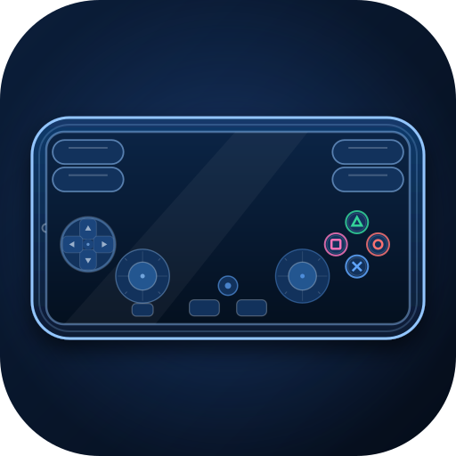

Android app
Phone controller
The pad, settings, screen preview, gyro aim, touchpad mouse mode and Bluetooth HID host selection.
- Android 7.0+
- Signed APK
- Works with the PC server or as a Bluetooth HID pad

lemoGamePad ultimateTurn your phone into a real gamepad
lemoGamePad ultimate sends input over your local network to a tiny PC server, then presents a genuine virtual controller to Windows or Linux games. Prefer no app? The PC can serve a browser pad on the same Wi-Fi.
Downloads · latest release 2.0.1
All 2.0.1 binaries are attached to the GitHub release. Check SHA256SUMS.txt before you run anything.
Android app
The pad, settings, screen preview, gyro aim, touchpad mouse mode and Bluetooth HID host selection.
Windows PC
A single .exe that installs its driver and firewall rules, then creates Xbox 360 or DualShock 4 pads.
lemoGamePad-server.exeLinux PC
A prebuilt binary plus installer, or run the Python source. Creates evdev pads through /dev/uinput.
lemoGamePad-server + install-linux.shNo download
Start the PC server and open the local Web pad URL it prints. It never loads a CDN, font, analytics service or cloud relay.
Looking for source rather than binaries? Browse the repository or download the source ZIP.
Quick start
The exact commands are in the setup guides below. This is the shape of the whole thing.
Double-click the Windows EXE, or run ./lemoGamePad-server on Linux. Leave the console window open while you play.
Note the PC IP and scan the QR code. The banner also reports the driver, firewall and browser-pad URL.
Open the app in landscape, tap the status pill, scan the QR or enter the IP, then tap Connect.
The phone becomes controller P1. Add more phones and choose PLAYER SLOT P1–P8 for each one.
Wi-Fi needs both devices on the same normal network. Guest Wi-Fi and “AP/client isolation” block the link — use USB tethering in that case.
Setup guides
Short versions are here so you can get going without leaving the page. Full guides cover every option.
lemoGamePad-server.exe from the latest release. Keep SHA256SUMS.txt beside it.certutil -hashfile .\lemoGamePad-server.exe SHA256.C:\lemoGamePad\ and double-click it.9876, TCP 9877 and TCP 9878.PC IP.Prefer to install things yourself? Run lemoGamePad-server.exe --no-install-deps, install ViGEmBus 1.22.0, and run pc\allow_firewall.ps1 as Administrator from the source repo.
lemoGamePad-server and install-linux.sh from the latest release into the same folder.sudo sh install-linux.sh, then ./lemoGamePad-server.sudo sh pc/linux/install-linux.sh, then pc/linux/run.sh.uinput, adds your user to input, opens the three ports and installs a capture helper for Wayland when needed. Log out and back in only if it says the group is not active.uinput : OK, then pair the phone with the QR code or IP.Wayland screen preview: install grim, spectacle or gnome-screenshot, or use an X11 session. Gamepad input works headless.
Bluetooth is different: it is a standard HID gamepad for a PC or Android host. Pair the host, then tap SELECT HOST in the app. It does not use the PC server.
Read the full Android guide →Web pad URL from the console, including ?k=..., or scan the browser QR code.This website is only for downloads and instructions. The playable browser pad must be opened from the http://PC-IP:9878/?k=... URL printed by your own PC server. Public HTTPS pages cannot open a local ws:// socket, and a relay would add latency.
Good to know
Nothing signs in, nothing phones home. The Android app and PC server talk directly over your network.
Windows games see an Xbox 360 pad through ViGEmBus; Linux games see an evdev pad through uinput.
P1–P4 are XInput on Windows; P5–P8 use DirectInput/Raw Input for games and emulators that support them.
The app and browser pad can show the PC screen through TCP 9877, with adaptive quality off by default.
Move controls, save named arrangements, use the touchpad as a mouse, enable gyro aim and tune sensitivity.
MIT licensed. Read the protocol, build from source, or open an issue when something breaks.
Troubleshooting
Check the server banner and firewall line. Use a normal Wi-Fi network, not guest Wi-Fi or one with AP/client isolation. If that is impossible, connect the phone by USB and enable USB tethering.
Choose More info → Run anyway. The binary is not code-signed. Accept the UAC prompts so the server can install ViGEmBus and its firewall rules.
Windows XInput exposes four pads. Pads 5–8 are DualShock 4/DirectInput devices for games and emulators that read those APIs. On Linux all eight are evdev Xbox pads.
The server was restarted, which generates a new random key. Copy the current Web pad URL or rescan lemoGamePad-web-qr-*.png.
Bluetooth is HID-only. On the host, add the “Lemo GamePad” device; in the app, tap MAKE DISCOVERABLE and then SELECT HOST. Keep the app open.
Use 5 GHz Wi-Fi or USB tethering, keep the phone near the PC and disable battery optimisation for the app. Try Input rate → TURBO only if the game samples at its own clock; otherwise STANDARD saves battery.
Anything else? Search the issue tracker or open a new issue with your OS, app version and the server banner.
Support
The full documentation, protocol notes and issue tracker live in the repository.